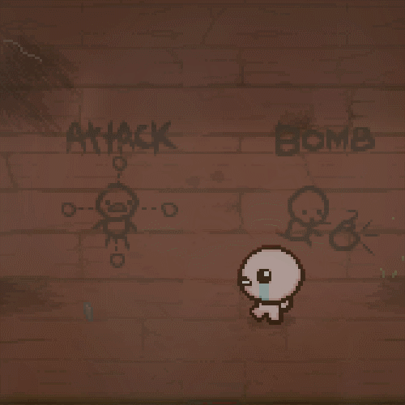
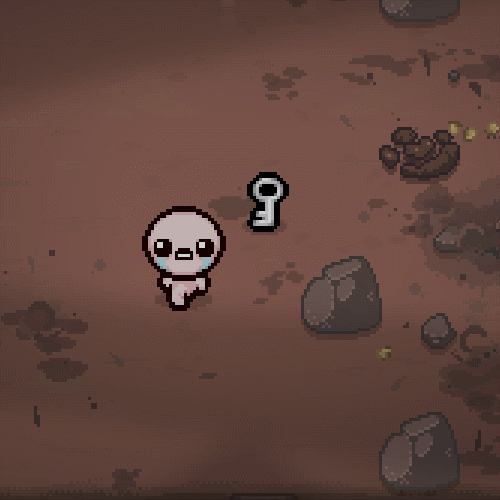
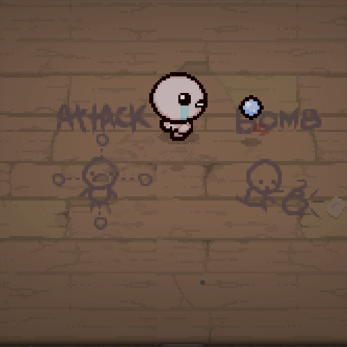
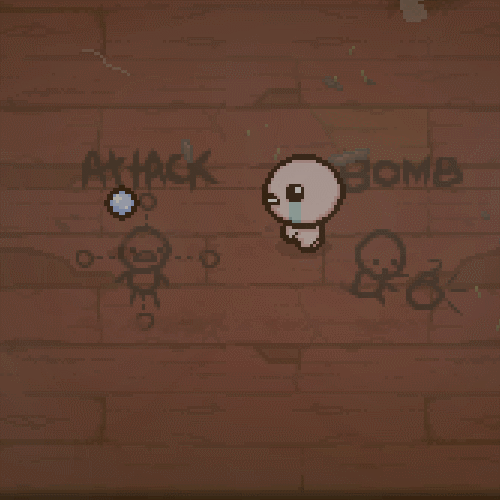
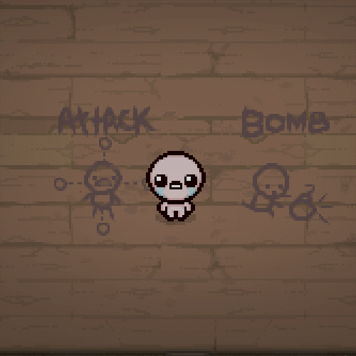

重生里加入了46个趣味种子，每一个都有独一无二的效果和乐趣, 而在Afterbirth DLC中，又添加了20个趣味种子。
下面是AB里所有的 趣味种子, 如果像查看另外46个，可以到此页面查看--> 有趣的地图种子 (Rebirth)
| 这里是神奇的种子 | 描述 / 效果 | 动图 |
| 1CES KATE |
滑动的物理效果, “以撒的脚滑”。 |  |
| DARK NESS |
在每一层都是黑暗诅咒 Curse of The Darkness | (没有图片) |
| LABY RNTH |
在每一层都是迷宫诅咒Curse of The Labyrinth （都是合成层） | (没有图片) |
| LOST | 在每一层都是迷路诅咒Curse of The Lost（不显示地图） | (没有图片) |
| VNKN 0WN |
在每一层都有未知诅咒Curse of The Unknown （不显示生命值） | (没有图片) |
| MAZE | 在每一层都有混乱诅咒Curse of The Maze.（有几率进错房间） | (没有图片) |
| BL1N D |
在每一层都有致盲诅咒Curse of The Blind（道具变成？）. | (没有图片) |
| CVRS ED |
在每一层都有"被诅咒"诅咒Curse of The Curse (除了特殊房间门，其他所有房间门都被替换为被诅咒的房间门。类似于挑战 #10 'CURSED!') | (没有图片) |
| N1TE L1TE |
去掉了黑暗诅咒Curse of the Darkness | (没有图片) |
| THRE AD |
去掉了迷宫诅咒 Curse of the Labyrinth. | (没有图片) |
| FOVN D |
去掉了迷路诅咒 Curse of the Lost. | (没有图片) |
| BRA1 LLE |
去掉了 致盲诅咒 Curse of the Blind. | (没有图片) |
| PATH FIND |
去掉了混乱诅咒Curse of the Maze. | (没有图片) |
| BLCK CNDL |
去掉了所有的诅咒 | (没有图片) |
| N0RE TVRN |
移除了BOSS房回去门，迫使你只能下层。 | (没有图片) |
| G0NE S00N |
所有掉落物7秒以后就会消失 |  |
| BRAV ERY |
眼泪只能朝你行走的方向发射。 |  |
| C0WR D1CE |
眼泪只能朝你行走的反方向发射。 |  |
| AX1S ALGN |
人物移动被锁死为四方向 | (这里是我在尝试像对角线方向移动) |